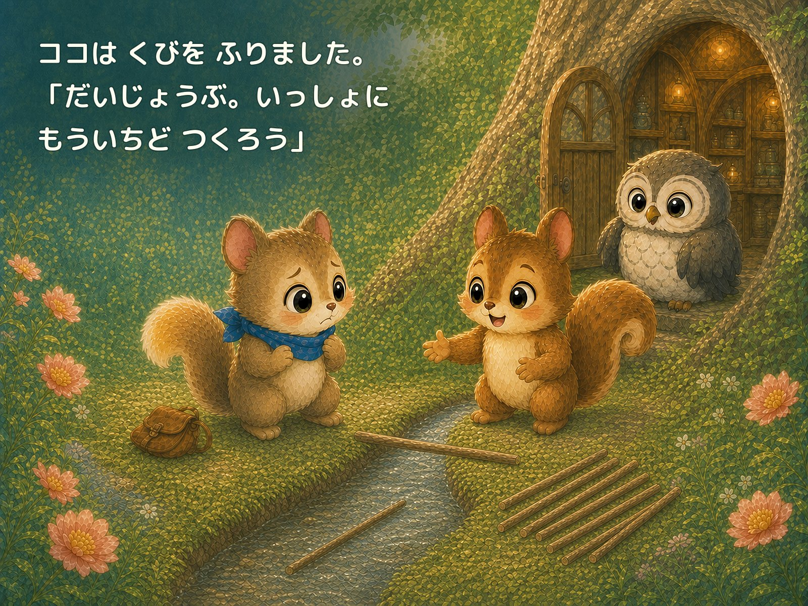

見ているだけでもいい
すぐ輪に入れなくても、そばで見ながら心を整えます。

STORY
リスのココが「いっしょに はしを つくらない？」と誘ってくれました。ところが、小さな橋は、ぐらぐら、ころん。
失敗しても、友だちといっしょなら、もう一度やってみられる。新しい場所へ一歩入る気持ちを、春の森とやさしい言葉で描きます。
「だいじょうぶ。いっしょに もういちど つくろう」

READ TOGETHER
すぐ輪に入れなくても、そばで見ながら心を整えます。
「枝を持つ」ことから、友だちとの遊びが始まります。
責めずに声をかけ合い、一緒にやり直す経験を描きます。